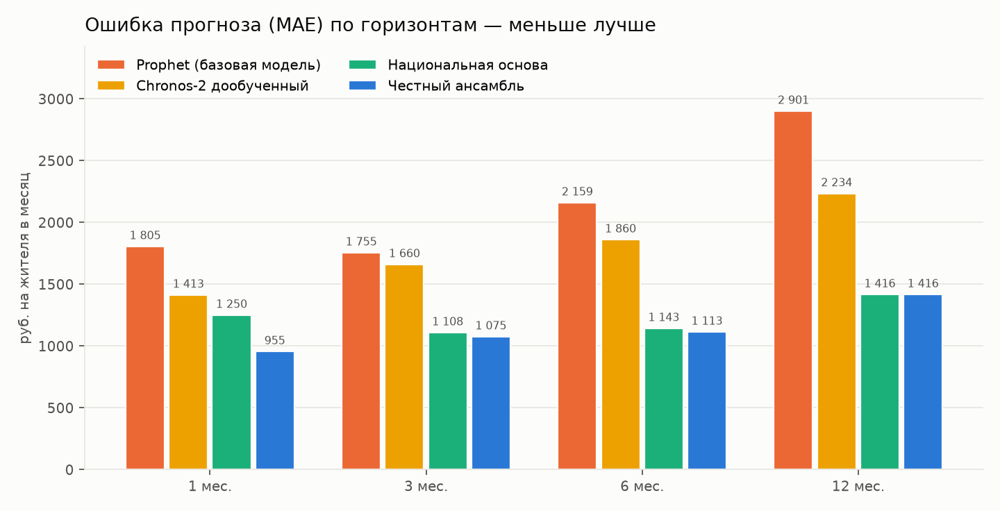
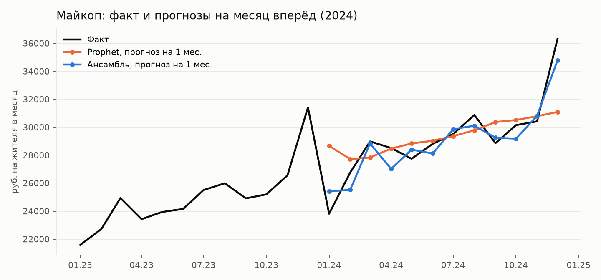
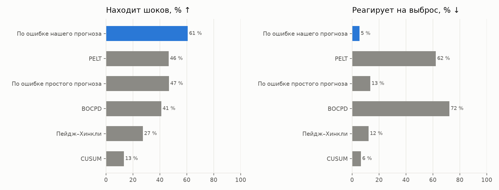
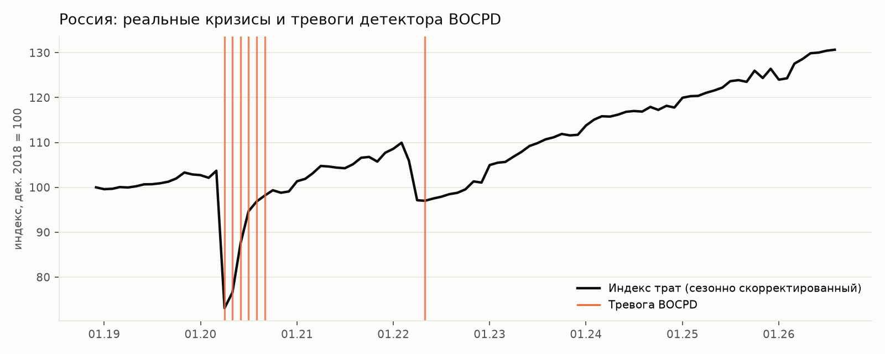
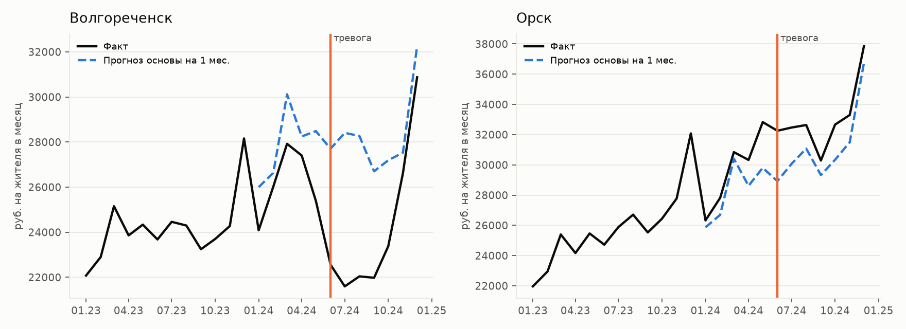
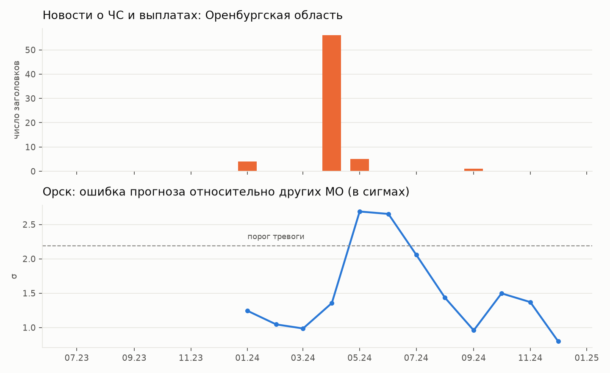

Кейс СберИндекса. 2 190 муниципальных образований, безналичные траты на жителя за 2023–2024 годы. Прогноз на 1, 3, 6 и 12 месяцев и обнаружение структурных изменений, совмещённое с прогнозом.
Траты в МО в основном движутся вместе со страной: общая сезонность (декабрь +19 %, январь −23 %) и общий рост ≈15 % в год. У МО всего 12–23 месяца истории, и собственный годовой рост по ним не оценить. Ряд по России (с 2018 года) показывает его всегда.
| Пример: Майкоп, прогноз на декабрь 2024, сделанный в декабре 2023 | Значение |
|---|---|
| Траты в декабре 2023 (сезонность) | 31 414 руб. |
| Рост трат по России за год на момент прогноза | ×1,178 |
| Прогноз сезонной наивной модели с дрейфом | 36 996 руб. |
| Факт | 36 320 руб. (ошибка 1,8 %) |
Это сезонная наивная модель с дрейфом: прогноз = тот же месяц год назад × рост трат по России (дрейф берётся из агрегированного ряда — элемент иерархического прогнозирования). Поверх неё модели машинного обучения учат только остатки (гибридная модель): растёт ли МО быстрее или медленнее страны. Тот же прогноз служит детектором шоков: если МО два месяца подряд расходится с прогнозом сильнее остальных МО — это шок.
Траты МО (организаторы), ряд России 2018–2026, справочник МО → регион (ОКТМО), индекс доступности рынков, 103 тыс. заголовков новостей.
Сезонная наивная с дрейфом + модели остатков (сжатие к росту страны, LightGBM) + фундаментальные модели (Chronos-2 дообученный, TimesFM, TiRex) → ансамбль с весами по прошлой точности.
Для МО — детектор по остаткам прогноза (МО расходится с прогнозом сильнее остальных МО 2 месяца подряд). Для России — BOCPD.
Заголовок → месяц публикации (без будущего) → МО и регион по названиям → темы → помесячные доли. Объясняют шоки и крупные события.
Проверка без подглядывания: перед каждой точкой прогноза модели обучаются только на прошлом; веса ансамбля — только по прошлым месяцам; автоматические тесты на утечку будущего.

| Модель | 1 мес. | 3 мес. | 6 мес. | 12 мес. |
|---|---|---|---|---|
| Prophet (базовая модель) | 1 805 | 1 755 | 2 159 | 2 901 |
| Сезонная наивная «как год назад» | 4 079 | 4 345 | 4 352 | 4 704 |
| Сезонная наивная с дрейфом | 1 250 | 1 108 | 1 143 | 1 416 |
| AutoETS (StatsForecast) | 2 070 | 2 390 | 3 169 | 6 218 |
| AutoTheta (StatsForecast) | 1 845 | 1 854 | 2 277 | 2 960 |
| N-HiTS (NeuralForecast) | 2 894 | 1 866 | 4 446 | 1 524 |
| LightGBM (глобальный, лучший вариант) | 1 216 | 1 298 | 1 552 | 2 993 |
| Гибрид: сезонная наивная с дрейфом + LightGBM по остаткам | 1 134 | 1 441 | 1 707 | 1 416 |
| Chronos-2, без обучения | 1 613 | 2 240 | 2 736 | 5 154 |
| TimesFM 2.5, без обучения | 1 486 | 1 903 | 2 432 | 4 200 |
| TiRex, без обучения | 1 335 | 1 908 | 1 997 | 3 086 |
| Chronos-2, дообученный | 1 413 | 1 660 | 1 860 | 2 234 |
| TimesFM 2.5, дообученный (LoRA) | 1 119 | 1 568 | 1 673 | 2 194 |
| Chronos-2, дообученный, форма года МО (смесь) | 1 068 | 1 314 | 1 533 | 1 614 |
| Ансамбль с весами по обратной ошибке (лучшая модель) | 1 010 | 1 131 | 1 114 | 1 416 |
Проверили и ключевую ставку как поправку к росту трат страны: на 2018–2026 гг. её рост предшествует замедлению трат, но в 2023–2025 гг. траты росли вопреки подъёму ставки с 7,5 до 21 %, и поправка ухудшила прогноз — в модель не включена.
R² по росту трат за год (насколько угадано, растёт МО быстрее или медленнее среднего): ансамбль 0,27 / 0,00 / −0,08 / −0,44, Prophet −0,85 / −0,97 / −2,17 / −5,72. Горизонт 12 месяцев оценивается по одной точке (24 месяца данных).

Разметки шоков в данных нет, поэтому детекторы проверены двумя способами: на искусственных шоках, встроенных в 400 реальных рядов МО в известный месяц (у всех детекторов одинаковые 10 % ложных тревог), и на реальных кризисах по России (2020, 2022).

| Детектор | Находит | Задержка, мес. | Тревога до шока | Реакция на выброс |
|---|---|---|---|---|
| По остаткам прогноза | 61 % | 1,4 | 2 % | 5 % |
| PELT | 47 % | 0,9 | 6 % | 62 % |
| По остаткам скользящего среднего | 47 % | 1,1 | 5 % | 13 % |
| BOCPD | 41 % | 0,5 | 7 % | 72 % |
| Пейдж–Хинкли | 27 % | 1,7 | 7 % | 12 % |
| CUSUM | 13 % | 2,0 | 2 % | 7 % |



В январе 2024 года траты всех МО Республики Алтай упали относительно типичного МО на 4–16 %. Простые детекторы приняли это за региональный шок. Но в январе 2023 было то же самое — это зимняя сезонность туристического региона. Детектор по ошибке прогноза сравнивает с тем же месяцем прошлого года и корректно её не отмечает.
Результат: новости из федерального СМИ хорошо объясняют крупные события (паводки в Орске и Кургане), но систематического выигрыша для малых МО не дают — о них почти не пишут (конкретное МО названо в 2 % заголовков). Направление развития — региональные СМИ.